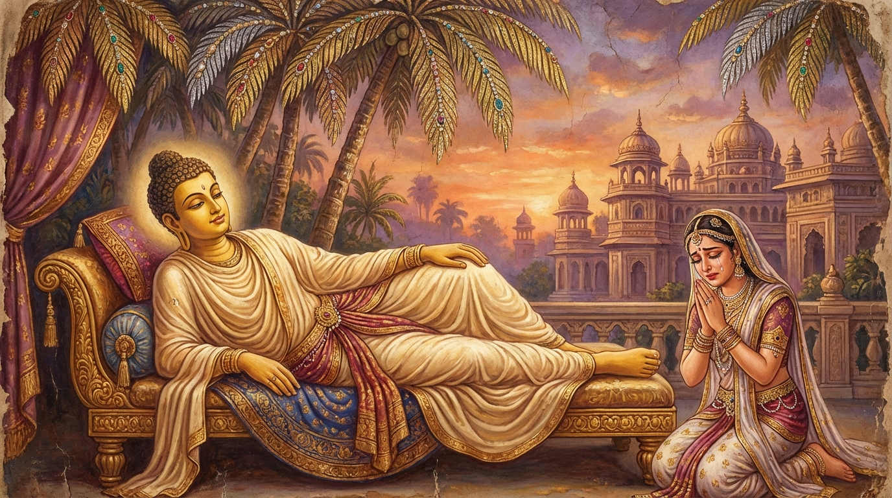

5. මහා සුදස්සන ජාතකය (95)
“අනිච්චා වත සඞ්ඛාරා” (සංස්කාරයෝ ඒකාන්තයෙන් අනිත්යයහ) යන මේ දේශනාව ශාස්තෲන් වහන්සේ පිරිනිවන් මඤ්චකයේ වැඩහිඳිනා කල්හි ආනන්ද තෙරුන් වහන්සේගේ “ස්වාමීනි, භාග්යවතුන් වහන්ස, මේ කුඩා නගරයේ පිරිනිවන් නොපානු මැනව” යනාදී වචන අරබයා වදාළ සේක. තථාගතයන් වහන්සේ ජේතවනයෙහි වැඩවසන කල්හි සැරියුත් තෙරණුවෝ කාර්තික (ඉල්) මස පුර පසළොස්වක පොහෝ දින නාලක ගමෙහි තමන් උපන් ගබඩා ගෘහයේදීම පිරිනිවන් පෑ සේක. මහා මුගලන් තෙරණුවෝ එම ඉල් මස අමාවක දින පිරිනිවන් පෑ සේක. මෙසේ අග්රශ්රාවක දෙනම පිරිනිවන් පෑ කල්හි “මම ද කුසිනාරාවෙහි පිරිනිවන් පාන්නෙමි”යි වදාරා අනුපිළිවෙලින් චාරිකාවෙහි වඩිමින් කුසිනාරාවට පැමිණ, යමක සාල වෘක්ෂයන් අතර උතුරට හිස ලා පැනවූ මඤ්චකයෙහි නොනැගිටින සෙය්යාවෙන් සැතපුණු සේක. ඉක්බිති ආයුෂ්මත් ආනන්ද තෙරණුවෝ උන්වහන්සේට මෙසේ කීහ: “ස්වාමීනි, භාග්යවතුන් වහන්ස, මේ විෂම වූ, ගොඩනැගිලිවලින් තොර වූ (උජ්ජඞ්ගල), ශාඛා නගරයක් බඳු වූ කුඩා නගරයක පිරිනිවන් නොපානු මැනව. චම්පා, රාජගහ ආදී වෙනත් මහා නගරයන් අතුරින් එක් නගරයක භාග්යවතුන් වහන්සේ පිරිනිවන් පානා සේක්වා!”. එවිට ශාස්තෲන් වහන්සේ “ආනන්දය, මෙය කුඩා නගරයකැයි ද, විෂම නගරයකැයි ද, ශාඛා නගරයකැයි ද නොකියව. මම පෙර මහා සුදස්සන නම් සක්විති රජව විසූ කාලයේ මේ නගරයෙහි විසුවෙමි. එකල්හි මෙය දොළොස් යොදුනක් වූ රත්නමය ප්රාකාරයකින් වට වූ මහා නගරයක් විය”යි වදාරා, තෙරුන් විසින් අයදනා ලදුව අතීත කථාව ගෙනහැර දක්වමින් මහාසුදස්සන සූත්රය (දීඝ නිකාය 2.241 ආදිය) වදාළ සේක.
එකල්හි මහා සුදස්සන රජු සුධම්ම නම් ප්රාසාදයෙන් බැස නුදුරෙහි වූ සත්රුවනින් බබළන තල් වනයෙහි පනවන ලද යෝග්ය වූ මඤ්චකයේ දකුණු පසින් නොනැගිටින සෙය්යාවෙන් සැතපී සිටියේය. එය දැක සුභද්රා දේවිය, “දේවයන් වහන්ස, කුසාවතී රාජධානිය ප්රමුඛ කොට ඇති ඔබගේ මේ අසූහාර දහසක් නගරයන් ඇත. මේවා කෙරෙහි ආශාව ඇති කරනු මැනව” යැයි කීවාය. එවිට මහා සුදස්සන රජතුමා “දේවිය, එසේ නොකියව. ඒ වෙනුවට ‘මේවා කෙරෙහි ආශාව දුරු කරනු මැනව, අපේක්ෂාව නොකරනු මැනව’යි මට අවවාද කරව”යි කීවේය. “කුමන කරුණක් නිසාද දේවයන් වහන්ස?” යි ඇය විමසූ විට, “අද මම කාලක්රියා කරන්නෙමි”යි රජු පිළිතුරු දුන්නේය. එවිට දේවිය හඬමින්, දෑස් පිස දමමින් ඉතා අපහසුවෙන් එසේ පවසා වැළපුනාය. ඉතිරි අසූහාර දහසක් ස්ත්රීහුද හැඬූහ, වැළපුණහ. ඇමතිවරුන් ඇතුළු පිරිසෙන් එක අයෙකුට හෝ එය ඉවසා සිටිය නොහැකි විය. සියල්ලෝම හැඬූහ. එකල්හි බෝධිසත්වයෝ, “එම්බා සගයෙනි, ශබ්ද නොකරවු, ඇති” යැයි සියල්ලන් වළක්වා, දේවිය අමතා, “දේවිය, ඔබ නොහඬව, නොවැලපෙව. තල ඇටයක් තරම් වූ හෝ සංස්කාරයක් නිත්ය නාම නොවන්නේය. සියල්ලෝම අනිත්යයහ, බිඳෙන ස්වභාව ඇත්තාහ” යැයි පවසා දේවියට අවවාද කරමින් මේ ගාථාව වදාළ සේක:

“සංස්කාරයෝ ඒකාන්තයෙන්ම අනිත්යයහ.
ඉපදීම සහ වැයවීම ස්වභාව කොට ඇත්තාහ.
ඔවුහු ඉපිද නිරුද්ධ වෙති (නැති වී
යති).
ඔවුන්ගේ සංසිඳීම (නිවන) සැපයකි.”
එහි ‘අනිච්චා වත සඞ්ඛාරා’ යනු: පින්වත් සුභද්රා දේවියනි, යම් තාක් හේතු ප්රත්යයන්ගේ එකතුවෙන් හටගත්තා වූ ස්කන්ධ, ආයතන ආදී සංස්කාරයෝ වෙත් ද, ඒ සියල්ල ඒකාන්තයෙන්ම අනිත්යයහ. මේවා අතුරින් රූපය අනිත්යය... (මෙසේ විස්තර කළ යුතුය)... විඤ්ඤාණය අනිත්යය. ඇස අනිත්යය... ධර්මයෝ අනිත්යයහ. විඤ්ඤාණයක් සහිත වූ හෝ විඤ්ඤාණයක් රහිත වූ හෝ යම්කිසි වස්තුවක් (රත්නයක්) වේ ද, ඒ සියල්ල අනිත්යමය. මෙසේ ‘සංස්කාරයෝ ඒකාන්තයෙන් අනිත්යයහ’යි ගන්න. කුමක් හෙයින්ද? ‘උප්පාදවයධම්මිනො’ (ඉපදීම හා වැයවීම ස්වභාව කොට ඇති බැවින්): මේ සියල්ල උපදින ස්වභාව ඇත්තේය, විනාශ වන ස්වභාව ඇත්තේය, හටගැනීම හා බිඳීම ස්වභාව කොට ඇත්තේමය. එබැවින් ‘අනිත්ය’ යැයි දත යුතුය. යම් හෙයකින් අනිත්ය ද, එහෙයින් ‘උප්පජ්ජිත්වා නිරුජ්ඣන්ති’ (ඉපිද නිරුද්ධ වෙති): ඉපදී පැවැත්මට (ස්ථිතියට) පැමිණිය ද නිරුද්ධ වන්නාහ ම ය. මේ සියල්ල හටගන්නා කල්හි ‘උප්පජ්ජන්ති’ (උපදී) නම් වේ. බිඳෙන කල්හි ‘නිරුජ්ඣන්ති’ (නිරුද්ධ වේ) නම් වේ. මොවුන්ගේ ඉපදීම ඇති කල්හිම පැවැත්ම (ස්ථිතිය) නම් දෙයක් වෙයි. පැවැත්ම ඇති කල්හිම බිඳීම (භංගය) නම් දෙයක් වෙයි. නූපන් දෙයකට පැවැත්මක් නම් නැත. පවතින දෙයක නොබිඳීමක් ද නැත. මෙසේ සියලු සංස්කාරයෝ (අනිත්ය, දුක්ඛ, අනාත්ම යන) ත්රිලක්ෂණයට පැමිණ ඒ ඒ තැනම නිරුද්ධ වෙති. එබැවින් මේ සියල්ල අනිත්යය, ක්ෂණිකය, තාවකාලිකය (ඉත්තරා), අස්ථිරය (අධුවා), බිඳෙනසුළුය (පභඞ්ගුනො), චලනය වන්නාහ, සෙලවෙන්නාහ, බොහෝ කල් නොපවතින්නාහ (අනද්ධනියා), විනාශයට යන්නාහ (පයාතා), ස්වල්ප කාලයකට සීමා වූවාහ, හරයක් නැත්තාහ. තාවකාලික බැවින් මායාවක් වැනිය, මිරිඟුවක් වැනිය, දිය පෙණ පිඬක් වැනිය. එවැනි දේ කෙරෙහි, පින්වත් සුභද්රා දේවිය, ඔබ කුමක් නිසා සැප සංඥාවක් උපදවන්නෙහිද? එබැවින් මෙය මෙසේ වටහා ගන්න: ‘තෙසං වූපසමො සුඛො’ (ඔවුන්ගේ සංසිඳීම සැපයකි): සියලු වෘත්ත දුක් සංසිඳෙන බැවින් ඒ සංස්කාරයන්ගේ සංසිඳීම හෙවත් නිර්වාණය යනු යමක් ද, එයම එකම ඒකාන්ත සැපය වේ. ඊට වඩා වැඩි වෙනත් සැපයක් නම් නැත.
මෙසේ මහා සුදස්සන රජතුමා අමා මහ නිවනින් දේශනාවේ කූටය (මුදුන) ග්රහණය කොට (දේශනාව නිමා කොට), ඉතිරි මහජනයාට ද “දන් දෙවු, සිල් රකිවු, පෙහෙවස්කම් කරවු” යැයි අවවාද දී දේව ලෝකයෙහි උපන්නේය.
ශාස්තෲන් වහන්සේ මේ ධර්ම දේශනාව ගෙනහැර දක්වා ජාතකය ගළපා වදාළ සේක: “එකල සුභද්රා දේවිය වූයේ දැන් රාහුල මාතාවෝය. ජ්යෙෂ්ඨ පුත්ර රත්නය වූයේ රාහුලය. ඉතිරි පිරිස බුදු පිරිසය. මහා සුදස්සන රජු වූයේ මම ම ය”.
මහාසුදස්සන ජාතක වර්ණනාව පස්වැනියි.